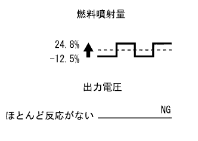

DTC P0420/94 Catalyst deterioration 1 |
| DTC. Tsu CS | P0420 / 94 | ||
|---|---|---|---|
| DTC detection conditions | Diagnostic condition | When all the following conditions are available
| |
| Abnormal state | The OSC value of the catalyst is below the judgment value | ||
| Abnormal period | 30 seconds or more | ||
| Number of trips | 2 trips | ||
| Method of detection | 1 Detect once during the trip (do not detect after the judgment) | ||
| Sensor used for detection | main |
| |
| Sub |
| ||
| Inspection site |
| ||
| * 1 | Exhaust manifold | * 2 | Kunen Hena (B1S1) |
| * 3 | Exhaust pipe ASSY FR (front & rear catalyst) | * 4 | Oxygen sensor (B1S2) |
| * 5 | Exhaust tail pipe ASSY | - | - |
| * 1 | Exhaust manifold converter SUB-ASSY (Front catalyst) | * 2 | Kunen Hena (B1S1) |
| * 3 | Exhaust pipe ASSY FR | * 4 | Exhaust pipe ASSY CTR (rear catalyst) |
| * 5 | Oxygen sensor (B1S2) | * 6 | Exhaust tail pipe ASSY |
 reference)
reference)| item | Fuel injection | Output voltage of Kunen Hena and Oxygen Sensor |
|---|---|---|
| [A/F sensor voltage B1S1] | 24.8%increase | 3.1 V less than V (rich state) |
| [A/F sensor voltage B1S1] | -12.5%decrease | 3.4 v or more (lean status) |
| [O2 sensor voltage B1S2] | 24.8%increase | 0.55 v or more (rich state) |
| [O2 sensor voltage B1S2] | -12.5%decrease | Less than 0.4 v (lean state) |
| Case | Output voltage of Kunen Hen Hena | Oxygen sensor output voltage | Inspection site |
|---|---|---|---|
| 1 |  |  | - |
| 2 |  | |
|
| 3 | |
| |
| 4 |
|
| Step 1 | Diag code reading |
Connect SST (Tascan) to DLC3.
Ig ON.
Check the diag code according to the screen display of SST (Tascan).(The point isreference)
| result | Destination |
|---|---|
| Output only P0420/94 | a |
| Output code other than p0420/94 | B |
|
| ||||
| a | |
| Step 2 | Exhaust gas leak inspection inspection |
Confirm that there is no exhaust leak from the joints of the exhaust pipe and the mounting part of each sensor.
|
| ||||
| Oh | |
| Step 3 | Tascan data reading (A/F sensor voltage B1S1) |
Connect SST (Tascan) to DLC3.
Start the engine, turn off all accessories switches, and warm up until the engine cooled water temperature is stabilized.(Engine cooling water temperature is 75 ° C or more)
Hold the engine speed at 2500 RPM for about 3 minutes to warm the Kunen Hena Sensa.
Select [ECU Data Monitor] - [A/F sensor voltage B1S1] and [engine speed] according to the SST (Tascan) screen display.
The A/F sensor voltage is measured three times for each engine under the following conditions.
During idling (measured for 30 seconds or more) [A]
Approximately 2500 RPM (no sudden change in engine speed) [b]
Accelerate the shift lever to 60 km/h in 2 positions, and release the accelerator pedal quickly so that the throttle valve is fully closed.[C]
| Item name | conditions | Reference value | reference |
|---|---|---|---|
| A/F sensor voltage B1S1 | [A] and [B] | Change in about 3.3 V | 3.1 and 3. 5 v |
| "C" | Raise to 3.8 v or more | Occurs during the deceleration of the engine (When fuel cut) |
| result | Destination |
|---|---|
| Kunen Hen Hena voltage value is normal | a |
| Kunen Hen Hena voltage value is abnormal | B |
|
| ||||
| a | |
| Step 4 | Tascan data reading (O2 sensor voltage B1S2) |
Connect SST (Tascan) to DLC3.
Start the engine, turn off all accessories switches, and warm up until the engine cooled water temperature is stabilized.(Engine cooling water temperature is 75 ° C or more)
Select [ECU Data Monitor] - [O2 sensor voltage B1S2] according to the screen display of SST (Tascan).
The engine speed is kept at 2500 RPM for about 3 minutes to warm the oxygen sensor.
Read [O2 sensor voltage B1S2] in about 2500 RPM.(A)
Run at high rotation (4000 rpm) in 2 positions of shift lever and read [O2 sensor voltage B1S2] when the speed / deceleration racing is performed several times.(B)
| Item name | Reference value |
|---|---|
| O2 sensor voltage B1S2 | (A) A voltage of 0.55 V or more is output at the time of (a) |
| (B) A voltage of 0.4 V or less is output |
| result | Destination |
|---|---|
| Abnormality | a |
| Normal (drive system FF) | B |
| Normal (drive system 4WD) | C |
|
| ||||
|
| ||||
| a | |
| Step 5 | Oxygen sensor replacement |
Reference (drive system: FF car))Reference (drive system: 4WD car))
|
| ||||
| Step 6 | Kunen Hen Hena replacement |
Reference (drive system: FF car))Reference (drive system: 4WD car))
|
| ||||
| Step 7 | Exhaust Pipe ASSY FR replacement (front & rear catalyst) |
reference)
|
| ||||
| Step 8 | Exhaust manifold converter SUB-ASSY exchange |
Exchange manifold converter SUB-ASSY.
| to the next | |
| Step 9 | Exhaust pipe ASSY CTR replacement |
reference)| to the next | |
| Step 10 | Diag code erasure |
Connect SST (Tascan) to DLC3.
Ig ON.
Erase the diag code according to the screen display of SST (Tascan).(The point isreference)
| to the next | |
| Step 11 | Activation confirmation operation implementation |
Wait for 30 seconds with Ig off.
Connect SST (Tascan) to DLC3.
Start the engine, turn off all accessories switches, and warm up until the engine cooled water temperature is stabilized.(Engine water temperature is 75 ° C or higher) (a)
Drive for more than 5 minutes at 70 to 100 km/h.(B)
According to the SST (TASCAN) screen display, select the main menu [Diagnosis] - [PowerTore] - [TCCS] -System Diagnosis menu [Diag Judgment Results Confirmation] - [Diag Code Confirmation].
On the next screen, enter the diagram code to be confirmed.
Confirm the diagcode judgment result.
| Display item | Content |
|---|---|
| normal |
|
| Abnormality |
|
| During the decision |
|
| It is not possible to determine |
|
| to the next | ||
| ||